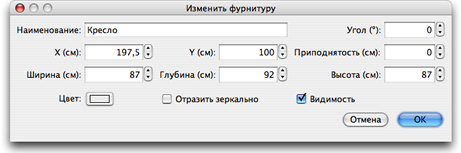

| Редактированеи фурнитуры | |||
Вы можете изменить позицию, размер и угол домашней фурнитуры с помощью мышки или меню Фурнитура >
Изменить.... Когда одна часть выделенна на плане, вы можете изменить ее размер, подъем или угол с помощью четырех индикаторов по углам выделеной части.
|

|
Когда мышка находится над объектом, она меняет вид и показывает значение свойства и в этот момент можно изменить показанное свойство фурнитуры. Когда нажмете кнопку мышки, выскочит окошко изменения свойств. Можно менять совйства и дважды щщелкнув на объекте на плане, тогда появится панель свойств выделенного объекта, причем щелкать можно как на плане, так и на списке фурнитур или можно изменить выделенную фурнитуру зайдя в менюФурнитура > Изменить....  Га плане вы можете изменить у фурнитуры наименование, угол поворота, абсциссу (X) и ординату (Y), уровень подъема над полом, ширину, глубину, высоту, цвет, видимость и зеркально отобразить 3D модель. |
|